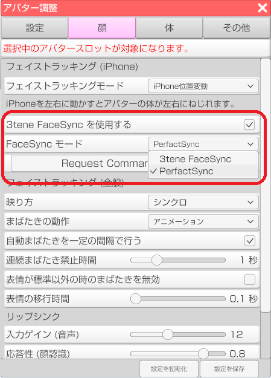

PerfectSync を利用するには 3teneFT と PerfectSync 対応の VRM モデルが必要です。
3teneFT ver 1.1.2 で舌の動きに対応しています。
※3teneFT ver 1.1.1 以前でも PerfectSync は使えますが、舌に対応していません。

「3tene FaceSyncを使用する」にチェックします。
使用するモデルに合わせてモードを選択します。
3tene FaceSync モード
PerfectSync に簡易対応した VRoidStusio 製の VRM で使用します。
まばたき、目などの動きは従来の 3tene と同じ処理、それ以外は PerfectSync で動作します。PerfectSync モード
PerfectSync に完全対応した VRM モデルで使用します。
全ての動作を PerfectSync で行います。
3tene FaceSync 利用時は口の動きも完全に制御するので音声リップシンクは使えません。
※リップシンクが無効状態でも顔認識で動作します。
VRoidStudio で作成され、PerfectSync に対応しているベースのVRMモデルを用意します。
ベース VRM モデルが作成された VRiodStudio と同じバージョンで出力されたモデルを用意します。
FaceForge を使用してベース VRM モデルから PerfectSync 情報をコピーします。
生成される VRM モデルの動作保証はされないので注意してください。